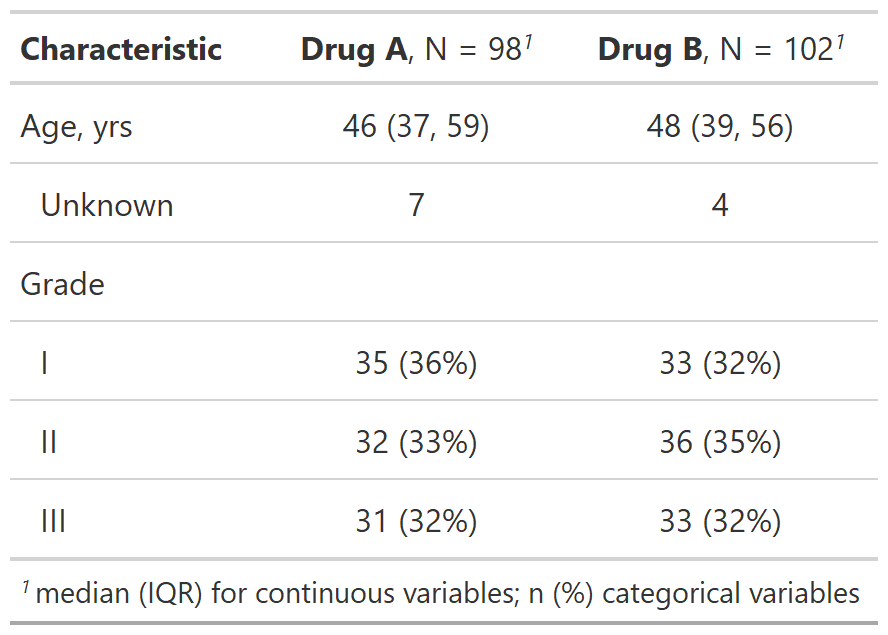
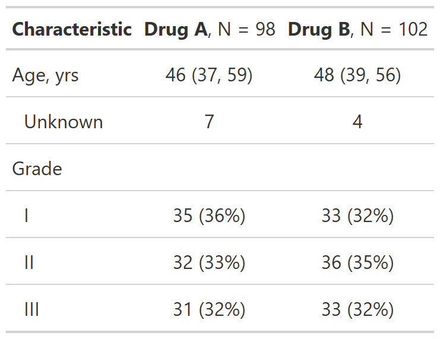
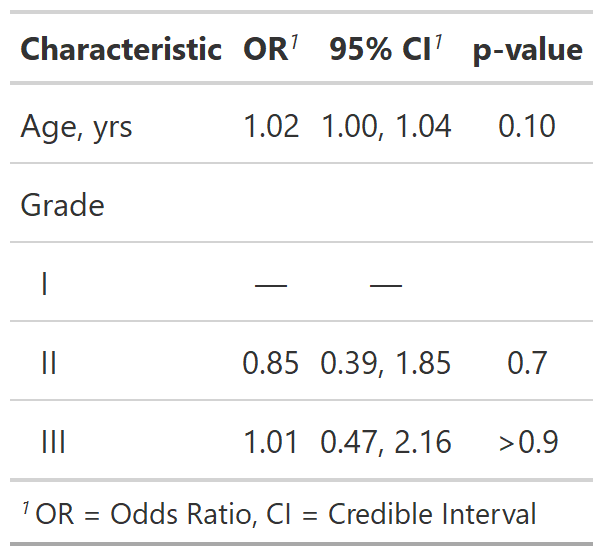

| modify_footnote {gtsummary} | R Documentation |
Update gtsummary table footnote
modify_footnote(x, update, abbreviation = FALSE)
x |
a gtsummary object |
update |
list of formulas or a single formula specifying the footnote
update. The LHS selects the columns from |
abbreviation |
Logical indicating if an abbreviation is being updated. Abbreviation footnotes are handled differently. See examples below. |
gtsummary object
Example 1

Example 2

Example 3

Other tbl_summary tools:
add_n(),
add_overall(),
add_p.tbl_summary(),
add_q(),
add_stat_label(),
bold_italicize_labels_levels,
inline_text.tbl_summary(),
inline_text.tbl_survfit(),
modify_header(),
modify_spanning_header(),
tbl_merge(),
tbl_stack(),
tbl_summary()
Other tbl_regression tools:
add_global_p.tbl_regression(),
add_nevent.tbl_regression(),
add_q(),
bold_italicize_labels_levels,
combine_terms(),
inline_text.tbl_regression(),
modify_header(),
modify_spanning_header(),
tbl_merge(),
tbl_regression(),
tbl_stack()
Other tbl_uvregression tools:
add_global_p.tbl_uvregression(),
add_nevent.tbl_uvregression(),
add_q(),
bold_italicize_labels_levels,
inline_text.tbl_uvregression(),
modify_header(),
modify_spanning_header(),
tbl_merge(),
tbl_stack(),
tbl_uvregression()
tbl_summary <-
trial %>%
select(trt, age, grade) %>%
tbl_summary(by = trt)
# Example 1 ----------------------------------
# update footnote
modify_footnote_ex1 <-
tbl_summary %>%
modify_footnote(
update = starts_with("stat_") ~
"median (IQR) for continuous variables; n (%) categorical variables"
)
# Example 2 ----------------------------------
# delete all footnotes - except abbreviations
# use `modify_footnote(everything() ~ NA, abbreviation = TRUE)` to delete abbrev. footnotes
modify_footnote_ex2 <-
tbl_summary %>%
modify_footnote(update = everything() ~ NA)
# Example 3 ----------------------------------
# updating the footnote abbreviation for CI
modify_footnote_ex3 <-
glm(response ~ age + grade, trial, family = binomial) %>%
tbl_regression(exponentiate = TRUE) %>%
modify_footnote(ci ~ "CI = Credible Interval", abbreviation = TRUE)